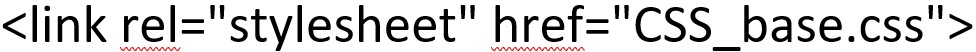
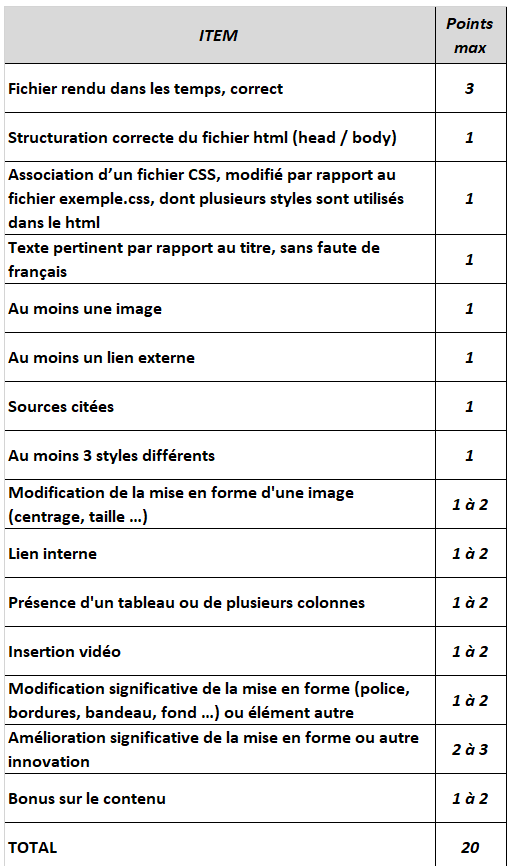

1) Relisez attentivement l'activité 3 P 62/63
2) Si besoin : lire le cours et visionner les vidéos de l'université de Lille, parties 4.1, 4.2, 4.3 en suivant le lien : Lille
1) Dans votre dossier perso (prenom.nom), créez un sous-dossier "chamois".
2) Dans ce sous-dossier, enregistrer les deux fichiers suivants en faisant clic droit et "enregistrer la cible du lien sous" : Chamois html et Chamois jpeg
3) A partir de votre sous-dossier, ouvrez chamois.html dans Mozilla Firefox : observez les styles, le titre de la page, le titre affiché dans l'onglet ...
4) Ouvrez chamois.html dans notepad++ ou pluma : le code html apparaît. Repérez le titre de l'onglet et le titre qui apparaît en haut de la page.
5) Choisissez un animal, renommez le sous-dossier en lui donnant le nom de votre animal, et le fichier chamois.html (fichier "monanimal.html" et sous-dossier "monanimal") et faites les modifications nécessaires pour présenter votre animal.
1) Toujours sur le fichier monanimal.html, observez la ligne 8 : elle définit le style du titre"h1".
2) Dans la partie "head", ligne 9, créez le style "h6", en suivant le modèle de "h1" (mais vous ne devez pas effacer ou changer h1) ; il aura les propriétés suivantes :
3) En dessous du titre (Mon animal : le chamois), créez un sous titre contenant vos noms
4) Affectez ce style "h6" au sous titre contenant vos noms (s'inspirer du titre auquel est affectée le style h1)
1) Charger et enregistrer le fichier css dans votre sous-dossier "Mon animal" : CSS
2) Ouvrez ce fichier avec notepad++
3) Dans votre fichier html, remplacez la ligne 8 (celle qui définit le titre h1) par :

4) Testez - que remarquez vous ?
1) Apportez les modifications nécessaires au fichier CSS pour que :
2) En fin de séance : copiez sur le réseau dans le dossier échange tout votre sous-dossier monanimal
Travail sur 2 séances à finir à la maison et à rendre 2 semaines plus tard
Par groupe de 2 élèves, choisissez un thème parmi ceux ci-dessous et faites une page web sur ce thème.
Les contraintes sont les suivantes :
Ce travail sera enregistré et fourni au professeur sur clef USB : fournissez bien toutes les données nécessaires (fichier html, css et images).
Voici la grille de notation du travail :
